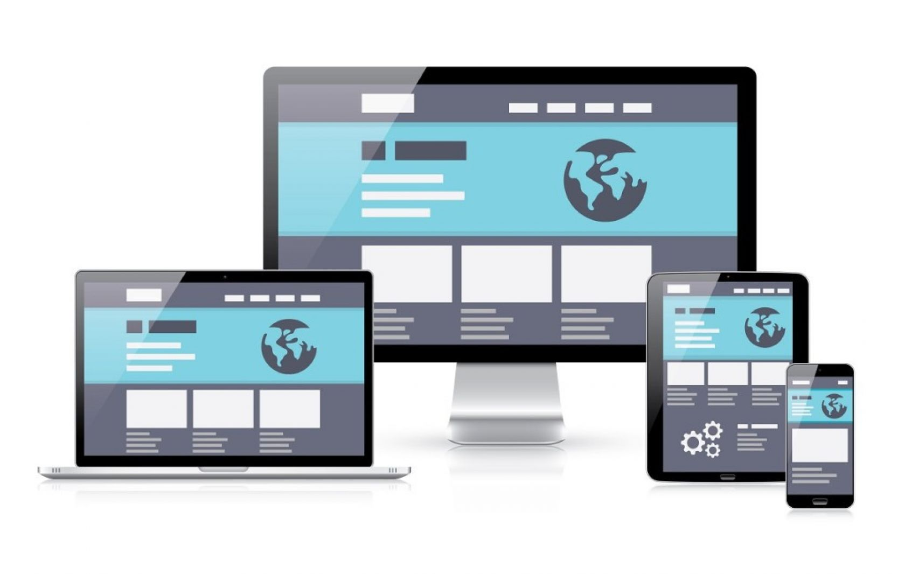
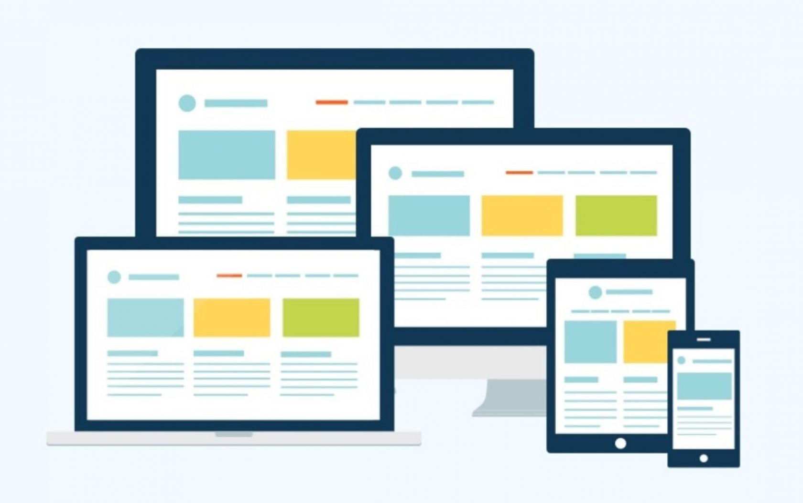

Що таке верстка сайту
Щоб зробити цей макет робочим інструментом, а не просто зображенням, необхідно написати код, який будуть розпізнавати браузери. Цей код відображається візуально так, як виглядає макет сайту.
Дизайн та верстка сайту – це два нерозлучні «брати», які завжди знаходяться разом. Перед дизайнером стоїть завдання розробити стильний макет. Завдання верстальника – втілити плани дизайнера в реальність та технічно, зробити сайт робітником.
Що означає верстати? Створювати структуру всіх елементів на сайті відповідно до попереднього макету. Правильна верстка сайту включає безліч нюансів, необхідно підібрати інструменти, перевіряти валідність верстки і добре розумітися на коді. Найменші помилки призводять до нестабільної роботи веб-сайту або взагалі до повного припинення функціонування.
Що включає верстка сайту
Верстка сайтів - це цілий комплекс процесів, ось лише деякі з них:
- вирізання з макету зображень, іконок та іншої графіки, компонування та збір в окрему папку;
- збирання шрифтів для коректного відображення;
- розробка сторінок сайту, спираючись на дизайн-макет;
- верстка сторінок у HTML та CSS;
- підключення JS-бібліотек; створення динаміки елементів;
- тестування та перевірка валідності верстки.
Верстальник створює живий інструмент із зображення, як тато Карло з поліна створював Буратіно.
3 основні види верстки веб-сайтів
Існує досить багато видів верстки сайтів, але фахівці виділяють 3 основні види: таблична, блокова та адаптивна.
Адаптивна верстка
Має на увазі коректне відображення на будь-яких видах пристроїв. На сьогоднішній день вона найпопулярніша, навряд чи знайдеться людина, яка захоче, щоб його сайт добре відображався лише на комп'ютерах або лише на смартфонах.
Проте адаптивна верстка - невід'ємна частина двох інших видів. Що це означає? Як у випадку з блочною, так і у випадку з табличною версткою обов'язково враховується адаптивність. Тому її набагато рідше виділяють як окремий вигляд. А ось про два інші – трохи докладніше.
Таблична верстка
Коли люди тільки-но навчилися верстати сайти, з'явився цей метод. Таблична версія дизайну сайту передбачає використання таблиць, наповнених інформацією. Зовні процес нагадує роботу в Excel.
Цей метод вважається вже застарілим, але активно використовується. Справа в тому, що він підходить для типових проектів із можливістю деталізації та індивідуалізації. Іншими словами, якщо є компанія, що працює у багатьох містах країни, можна під кожне місто створювати сайт, використовуючи цю верстку. Зовні вони будуть схожі, матиму єдину стилістику, але індивідуальні відмінності будуть.
Блокова верстка
Це сучасний універсальний вид верстки сайтів, що активно використовується для створення якісних веб-сторінок. Принцип його полягає в тому, що всі елементи розміщуються в блоках або контейнерах. Вони містять необхідну інформацію і є регульованими. Можна встановити їх розмір, колір та інші параметри.
Блокова верстка дизайну макета простіше, має більше можливостей і здатна реалізувати будь-які ідеї дизайнера. Код виходить чистішим і легшим, він зручно читається браузерами, що впливає на ранжування сайту в пошукових системах. Крім того, блоки гарантують адаптивний дизайн, тому сайт коректно відображається на різних пристроях.

Інструменти верстальника
Інструменти допомагають спростити процес верстки. Вони мають певний функціонал та можливості.
Інструменти поділяються на текстові та візуальні. Крім того, є гібридні програми, де можна верстати як за допомогою коду, так і візуально, створюючи блоки. Інструментів існує велика кількість, але вони поділяються на категорії. На чому верстати сайт? Ось інструменти, які знадобляться для роботи спеціалісту:
- Програми для обробки зображень: Adobe Photoshop, Gimp, Krita та інші програми, що дозволяють з макету взяти елементи та працювати з візуальним контентом.
- Програми для роботи з кодом: Notepad++, UltraEdit, Adobe DreamViewer, CSS3 Generator, SublimeText, Firebug, CoffeeCup HTML Editor, Winless, WinMerge та інші.
- Програми для роботи з JS: Front Page, NetBeans та інші інструменти.
- Програми перевірки працездатності: Crossbrowsertesting, Markup validtor, IE Tester, Validator.w3, Dr. Watson, Css validator та інші.
Які складності є у верстці сайтів
Спочатку здається, що верстка дизайну макету – це просте заняття. Достатньо знати код, вміти користуватися парочкою програм і все готове. На практиці навіть досвідчені фахівці стикаються із серйозними проблемами.
Не все, що намалював дизайнер можна добре зробити технічно. Дизайнер повинен чітко розуміти специфіку верстки, щоб одразу визначати можливості.
Також не вирішено проблему єдиного стандарту. Кожен браузер може відображати елемент по-своєму. Верстальник повинен враховувати це і перевіряти на безлічі платформ ті самі елементи.
Для адаптивності сайту потрібно враховувати вимоги пристроїв та особливості поведінки елементів. Не вся анімація добре працюватиме на різних пристроях. На особливу увагу заслуговують шрифти. З нестандартними шрифтами можуть бути великі складнощі.
Якою має бути верстка
Верстка дизайну сайту підпорядковується суворим законам. В іншому випадку код буде неправильним, а працездатність сайту знижена.
Ознаки правильної верстки:
- верстка обов'язково повинна бути кросбраузерною і коректно відображатися в різних браузерах, незалежно від роздільної здатності екрана;
- блочна верстка із застосуванням вважається найбільш якісною, при цьому вона має бути адаптивною до всіх пристроїв;
- валідна верстка сайту – у коді не повинно бути помилок;
- стилі виносяться в окремий файл, код сторінки максимально короткий та легкий;
- вміст HTML і CSS прописано лише малими літерами;
- CSS має переваги перед JS, все, що можна зробити за допомогою стилів, робиться лише через них;
- правильно структуровані заголовки, абзаци, продумані їх стилі;
- код зрозумілий, має чітку структуру, видно теги, що відкривають і закривають;
- усі зображення мають прописані розміри;
- збережено розміри початкового макета.
При дотриманні цих правил сайт працюватиме правильно, швидко, а інші фахівці за необхідності зможуть розібратися в коді.
Перевірка верстки
Після того, як верстка дизайну сайту закінчена, необхідно запустити перевірку та переконатися, що всі елементи правильно зроблені. Базове тестування має на увазі використання кількох сценаріїв, де сайт перевіряється на різних браузерах та пристроях.
Для більш точної оцінки працездатності використовуються різні інструменти та послуги. Деякі сервіси дозволяють порівнювати готову верстку із початковим макетом сайту на відповідність.
Під час перевірки верстки вивчається код на наявність незакритих тегів. Перевіряється правильність семантичної розмітки для пошукових систем, кросбраузерність, а також функціональність сторінки, навіть якщо вимкнено зображення та коди JavaScript. Після перевірки сайт віддається на подальшу розробку.